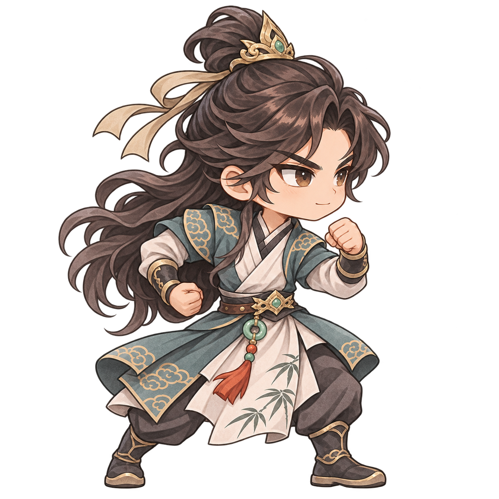
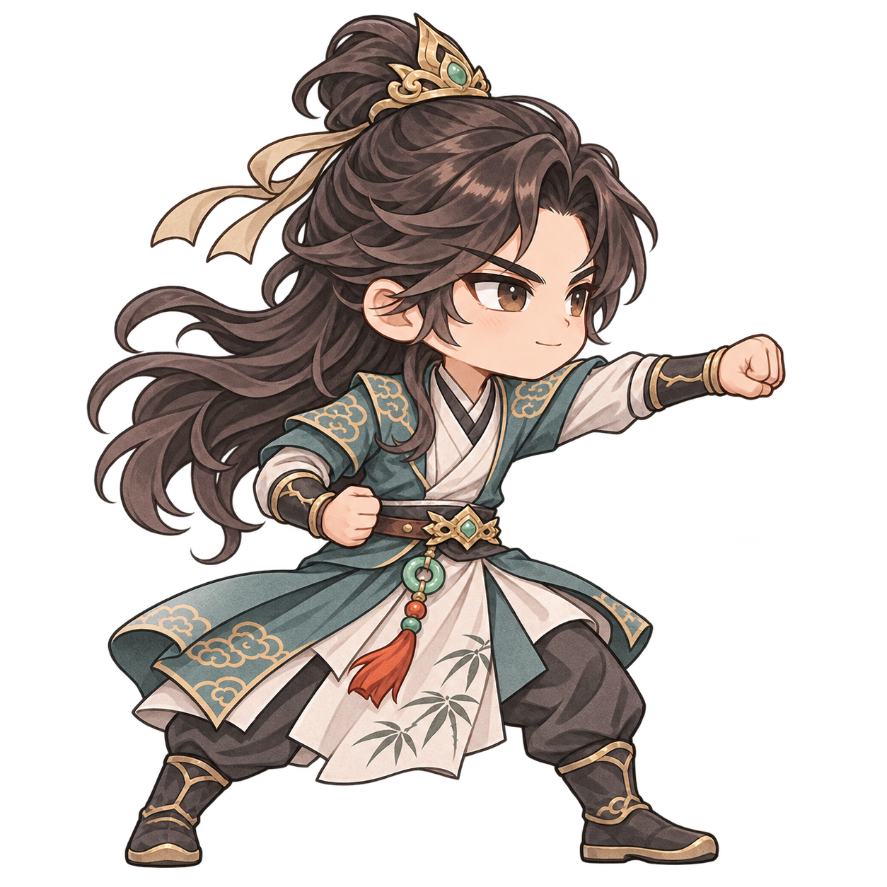
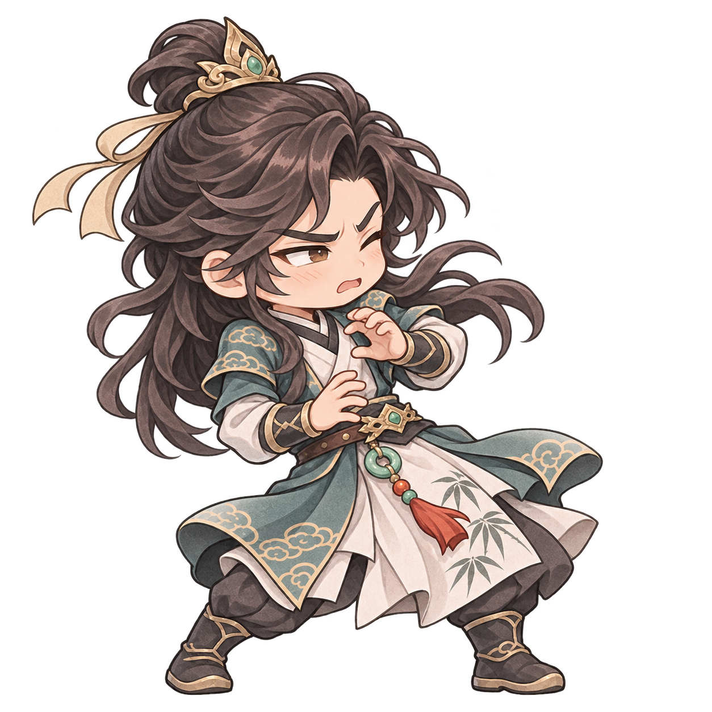
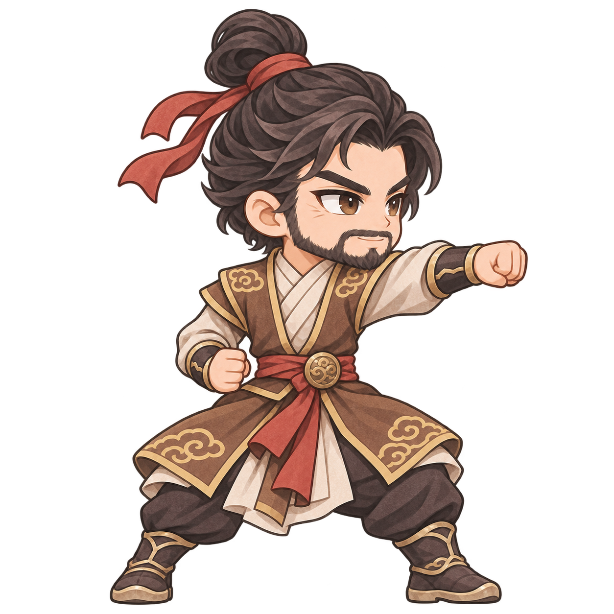
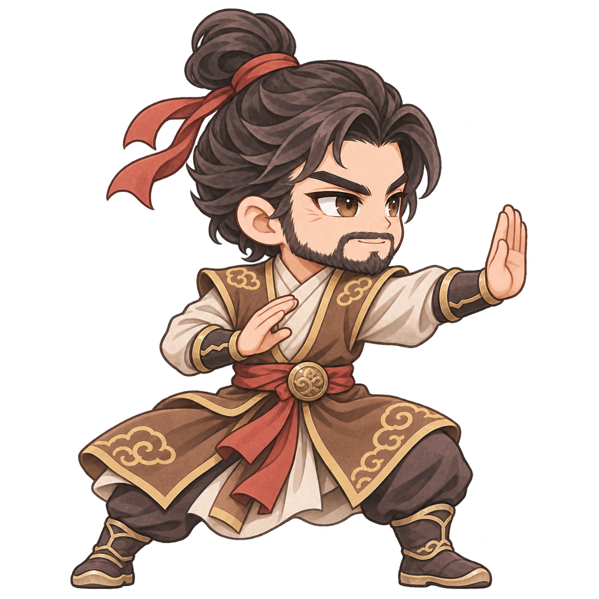
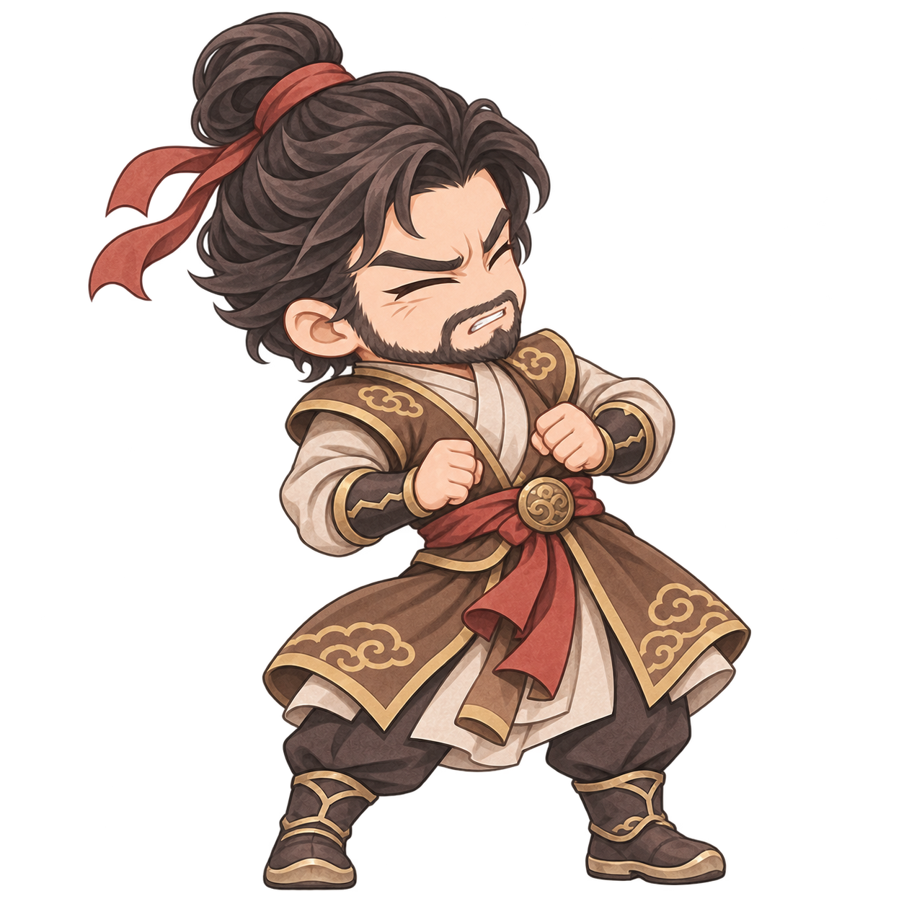
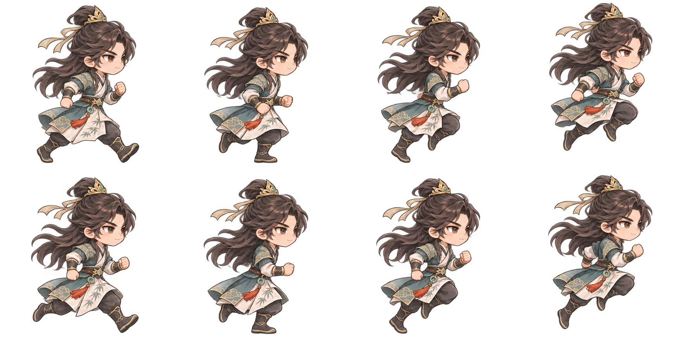

无名少侠
青白衣衫 · 金色云纹 · 青玉腰饰
查看透明原图 ↗大头小身 / 完整手脚 / 独立动作 PNG
少侠 · 待机

少侠 · 蓄势
少侠 · 出拳
少侠 · 受击 武师 · 待机
武师 · 出拳
武师 · 推山掌
武师 · 受击
地图移动时循环播放跑步动作，向左移动时镜像转身；停下、交谈或遇到障碍时回到待机。键盘移动和点击寻路均可触发。
战斗按“待机 → 蓄势 → 出拳／张掌 → 收势”切换关键姿态，受击时显示独立表情与动作，配合位移、拳风、气浪和伤害飘字。它们是关键姿态图片，尚不是连续逐帧动画或可拆分换装的骨骼素材。